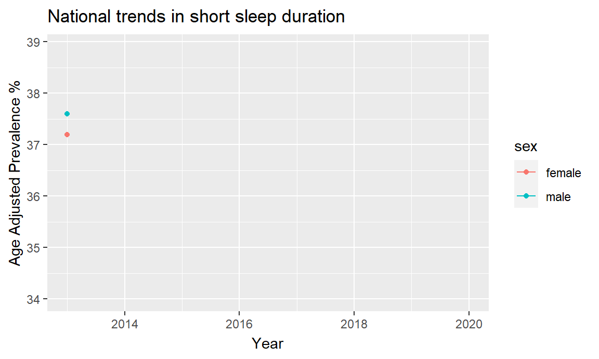
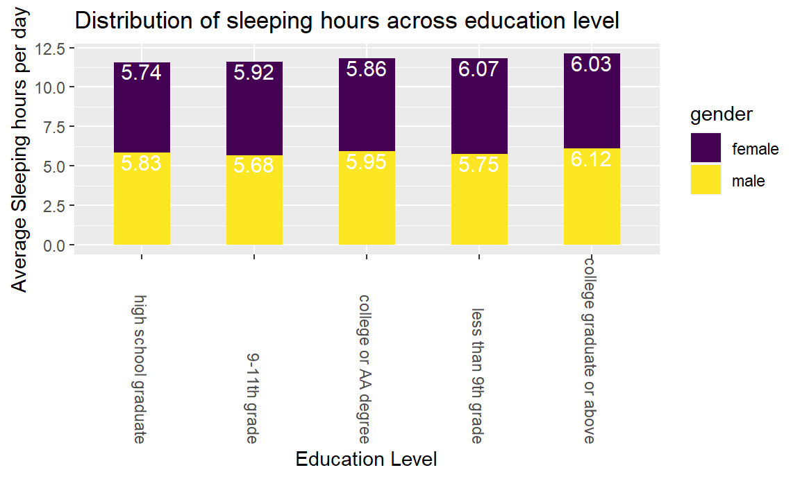
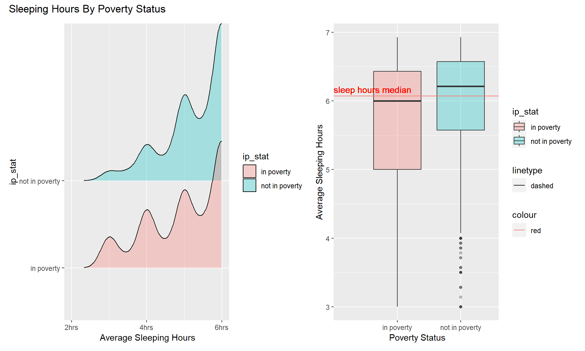
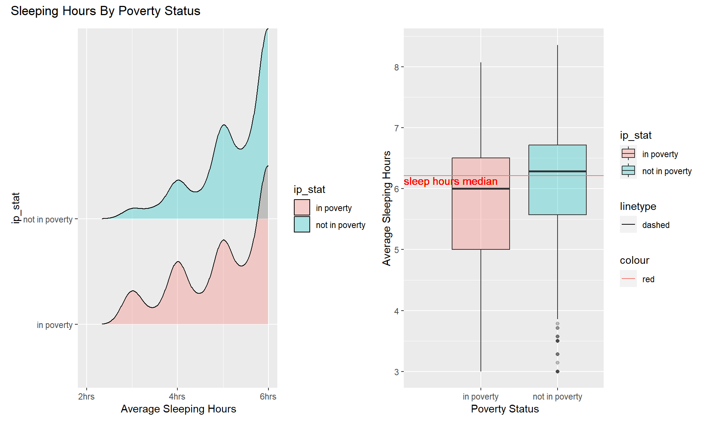
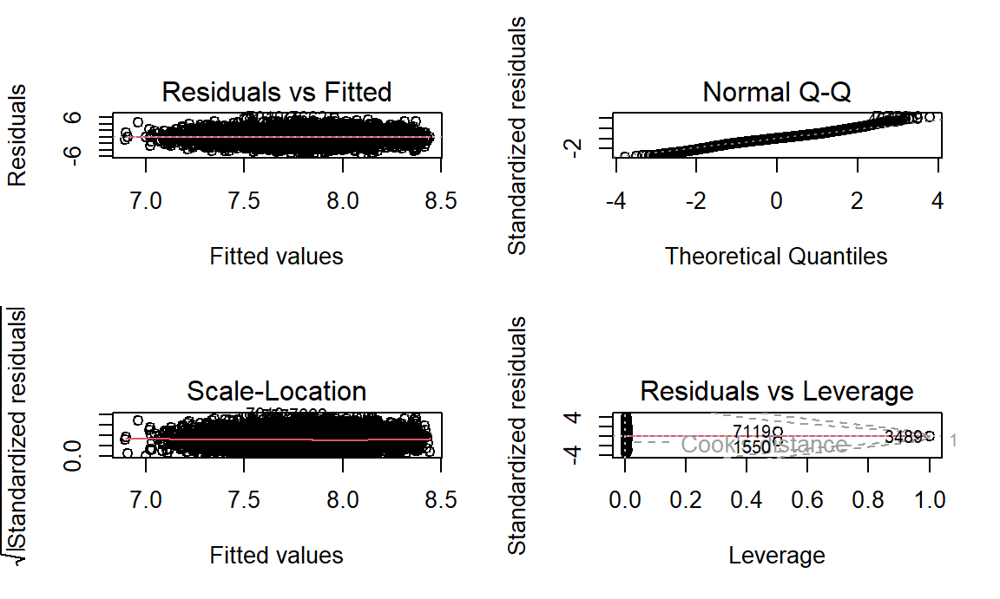
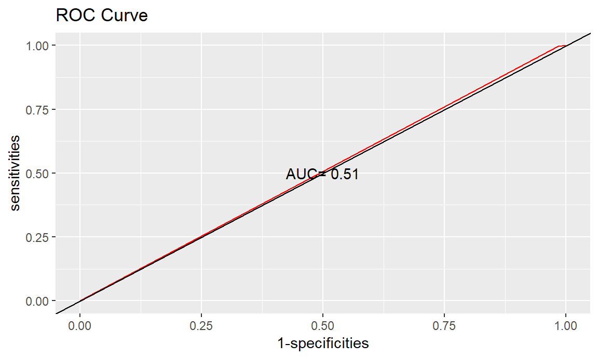
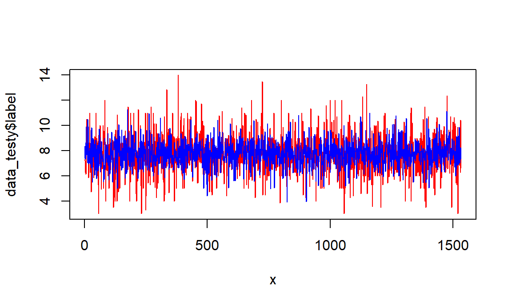
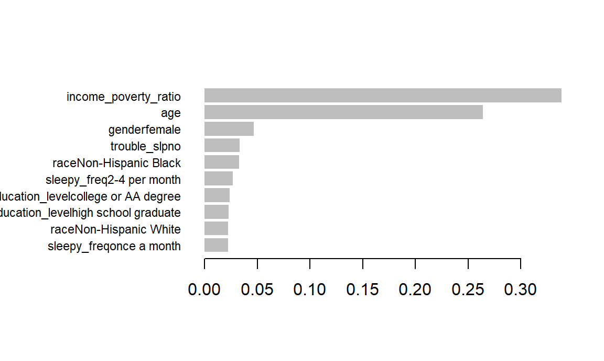
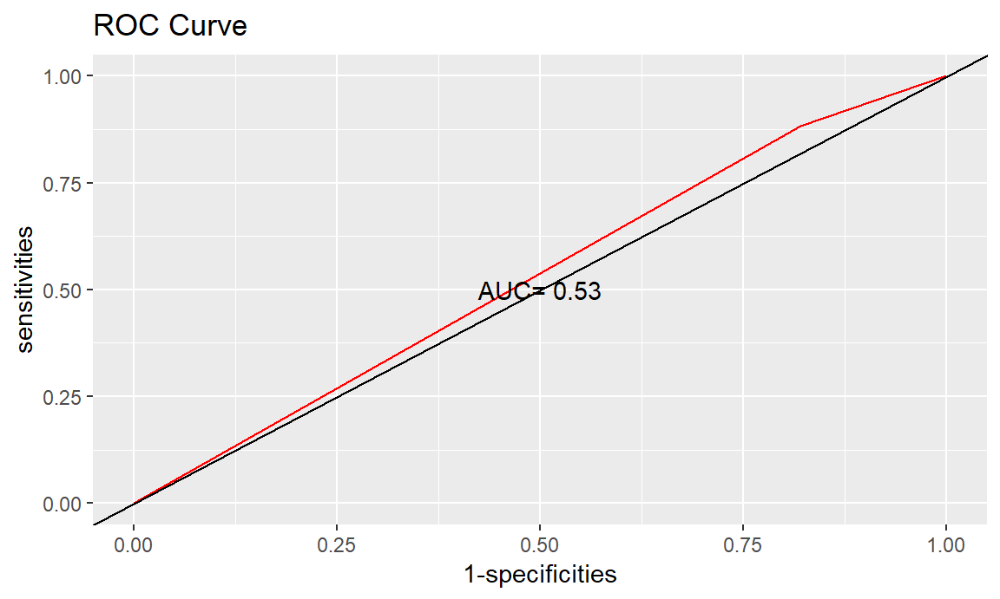
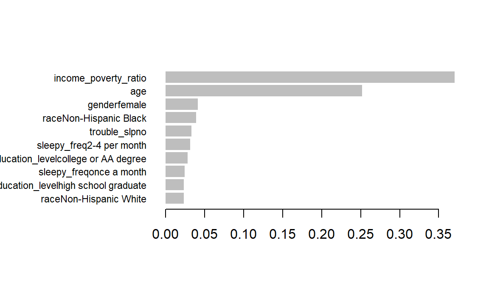

On this page, we will be exploring the overall trends for our key outcome- sleeping hours per day, and how these outcomes correlate with the predictors, including demographic variables like age, race, sex, education level, and poverty status.
ave_slp_hr, which is the average
sleeping hours per day, by calculating the mean of the weekday and
weekend sleeping hours. For the third step, all empty cells was removed.
Finally, the two cleaned data sets was joined through the patients’
unique sequence number.demo=foreign::read.xport("nhanes/P_DEMO.XPT") %>%
janitor::clean_names() %>%
select(seqn,riagendr,ridageyr,ridreth3,dmdeduc2,indfmpir) %>%
drop_na() %>%
dplyr::rename(gender=riagendr,
age=ridageyr,
race=ridreth3,
education_level=dmdeduc2,
income_poverty_ratio=indfmpir) %>%
mutate(gender=case_when(gender==1 ~ "male",
gender==2 ~ "female")) %>%
mutate(race=case_when(race==1 ~ "Mexican American",
race==2 ~ "Other Hispanic",
race==3 ~ "Non-Hispanic White",
race==4 ~ "Non-Hispanic Black",
race==6 ~ "Non-Hispanic Asian",
race==7 ~ "Other Race")) %>%
mutate(education_level=case_when(education_level==1 ~ "less than 9th grade",
education_level==2 ~ "9-11th grade",
education_level==3 ~ "high school graduate",
education_level==4 ~ "college or AA degree",
education_level==5 ~ "college graduate or above",
education_level==7 ~ "refused",
education_level==9 ~ "don't know"))
sleep_df=foreign::read.xport("nhanes/P_SLQ.XPT") %>%
janitor::clean_names() %>%
select(seqn,slq300,slq310,sld012,slq320,slq330,sld013,slq050,slq120) %>%
rename(weekday_slp_time=slq300,
weekday_wake_time=slq310,
weekday_slp_hr=sld012,
weekend_slp_time=slq320,
weekend_wake_time=slq330,
weekend_slp_hr=sld013,
trouble_slp=slq050,
sleepy_freq=slq120
) %>%
filter(weekday_slp_time!=77777 & weekday_slp_time!= 99999) %>%
filter(weekday_wake_time!=77777 & weekday_wake_time!= 99999) %>%
filter(weekend_slp_time!=77777 & weekend_slp_time != 99999) %>%
filter(weekend_wake_time!= 77777 & weekend_wake_time != 99999) %>%
filter(trouble_slp!=7 & trouble_slp!= 9) %>%
filter(sleepy_freq!= 7 & sleepy_freq!=9) %>%
drop_na() %>%
mutate(trouble_slp=case_when(trouble_slp==1 ~ "yes",
trouble_slp==2 ~ "no")) %>%
mutate(sleepy_freq=case_when(sleepy_freq==0 ~ "never",
sleepy_freq==1 ~ "once a month",
sleepy_freq==2 ~ "2-4 per month",
sleepy_freq==3 ~ "5-15 per month",
sleepy_freq==4 ~ "16-30 per month",
))%>%
mutate(ave_slp_hr = (5*weekday_slp_hr + 2*weekend_slp_hr)/7)slp_df=inner_join(demo,sleep_df,by="seqn") %>%
na_if("") %>%
na.omit()
write_csv(slp_df, "data/slp_df.csv")Short sleep duration is based on age group recommended hours of sleep per day and defined as less than 7 hours for adults. This plot shows age-adjusted prevalence of adults who reported short sleep duration from 2013 to 2020. Overall, short sleep duration prevalence was higher among males than females across years.
year_df=read_csv("data/AdultTrends.csv") %>%
janitor::clean_names() %>%
pivot_longer(cols=c("female", "male"),
names_to = "sex",
values_to = "age_adjust_prev") %>%
ggplot(aes(x=year,y=age_adjust_prev,col=sex))+geom_line()+geom_point()+labs(
title = "National trends in short sleep duration",
x = "Year",
y = "Age Adjusted Prevalence %"
)
year_df+transition_reveal(year)
We first want to get the distribution of sleeping hours less than 7 hours across the five different education levels. We will construct a bar chart tabulating the average sleeping hours per week in each of the five education levels. Gender consideration was also added into to the bar chart in order to see a difference between female and male in each category.
edu_plot=slp_df %>%
filter(ave_slp_hr<7)%>%
group_by(education_level,gender) %>%
summarize(ave_sleep=mean((weekday_slp_hr*5+weekend_slp_hr*2)/7)) %>%
ungroup() %>%
mutate(education_level=fct_reorder(education_level,ave_sleep)) %>%
ggplot(aes(x=education_level,y=ave_sleep,fill=gender))+ geom_bar(width=0.5,stat="identity")+
viridis::scale_fill_viridis(
name = "gender",
discrete = TRUE
) + geom_text(aes(label = round(ave_sleep, 2)),position = position_stack(vjust=0.9), color = "white", size = 4)+
theme(axis.text.x = element_text(angle = -90, vjust = 0.5, hjust=1))+labs(
title = "Distribution of sleeping hours across education level",
x = "Education Level",
y = "Average Sleeping hours per day"
)
edu_plot
From the above plot, high school graduates has the least sleeping hours, while college graduates or above has the highest. Female and male does not have a significant difference in both groups.
A heat map was made to visualize sleeping hours less than 7 hours among different races. The below plot indicates that there is a large number of people who has a sleeping hour of 6 hours per day among the Non-Hispanic black group. There are also many Non-Hispanic Whites who has an average of 6 hours per day.
race_plot=slp_df %>%
filter(ave_slp_hr<7) %>%
mutate(sleep_ave=(weekday_slp_hr*5+weekend_slp_hr*2)/7) %>%
group_by(race,sleep_ave) %>%
summarise(obs=n()) %>%
plot_ly(
x = ~sleep_ave, y = ~race, z = ~obs, type = "heatmap", colors = "BuPu"
) %>%
colorbar(title = "Number of People", x = 1, y = 0.5)
layout(race_plot, xaxis = list(title = "Average Sleeping Hours Per Day"), yaxis = list(title = "Race"))The below plot demonstrates the gender gap in the patients for different races. Male outnumber female for sleeping less than 7 hours per day for all race, except Non-Hispanic Black and Non-Hispanic Asian. The bubble represents the degree of the gap, along inlcuding their education level.
gender_plot=slp_df %>%
filter(ave_slp_hr<7) %>%
group_by(race,education_level) %>%
summarize(total_f=sum(gender=="female"),
total_m=sum(gender=="male"),
gap=total_m-total_f) %>%
mutate(text_lable=str_c("Race=",race,"\nEducation level: ", education_level)) %>%
plot_ly(x=~total_m,y=~total_f,text=~text_lable,color=~race,size=~gap,type="scatter",mode="markers",
colors="viridis",sizes = c(50, 700), marker = list(opacity = 0.7))
layout(gender_plot, title = "Race Gender Gap by Education Level", xaxis = list(title = "Number of Male Sleeping less than 7 hrs"), yaxis = list(title = "Number of Female Sleeping less than 7 hrs"))We can observe that people who are in poverty tend to have less sleeping hours than those who are not in poverty.
income_df=slp_df %>%
filter(ave_slp_hr<7) %>%
mutate(ip_stat=case_when(income_poverty_ratio > 1 ~ "not in poverty",
income_poverty_ratio < 1~ "in poverty",
income_poverty_ratio == 1~ "in poverty")) %>%
ggplot(aes(x=weekday_slp_hr,y=ip_stat,fill=ip_stat))+
geom_density_ridges(
aes(point_color = ip_stat, point_shape = ip_stat,point_fill=ip_stat),
alpha = .3, point_alpha = 0.7)+
scale_x_continuous(
breaks = c(2, 4, 6),
labels = c("2hrs", "4hrs", "6hrs"),
limits = c(2, 6)
)+labs(
x = " Average Sleeping Hours"
)
box_plot=
slp_df %>%
filter(ave_slp_hr<7) %>%
mutate(ip_stat=case_when(income_poverty_ratio > 1 ~ "not in poverty",
income_poverty_ratio < 1~ "in poverty",
income_poverty_ratio == 1~ "in poverty")) %>%
mutate(sleep_ave=(weekday_slp_hr*5+weekend_slp_hr*2)/7) %>%
ggplot(aes(x=ip_stat,y=sleep_ave))+geom_boxplot(aes(fill = ip_stat), alpha = 0.3)+
geom_hline(aes(yintercept=median(sleep_ave),
color="red", linetype="dashed"))+
geom_text(aes(0, median(ave_slp_hr), label = "sleep hours median"), vjust = -0.5, hjust = 0, color = "red")+labs(
x = " Poverty Status",
y = "Average Sleeping Hours"
)
comb=income_df+box_plot
comb+plot_annotation(
title = "Sleeping Hours By Poverty Status"
) 
A bar plot was made to see the distribution of average sleeping hours less than 7 hours in different age groups. People age between 71 and 80 has the least sleeping hours with about 5.68 hours per day.
age_group= slp_df%>%
filter(ave_slp_hr<7) %>%
mutate(age_gp=case_when(age>=20 & age<=30 ~ "20-30",
age>=31 &age <=40 ~ "31-40",
age>=41 &age<=50 ~ "41-50",
age>=51 &age<=60 ~ "51-60",
age>=61 &age<=70 ~ "61-70",
age>=71 & age <=80 ~ "71-80")) %>%
group_by(age_gp) %>%
summarise(ave_slp=mean((weekday_slp_hr*5+weekend_slp_hr*2)/7))%>%
ungroup() %>%
mutate(age_gp=fct_reorder(age_gp,ave_slp)) %>%
ggplot(aes(x=age_gp,y=ave_slp,fill=age_gp))+ geom_bar(stat="identity")+ scale_fill_viridis_d()+
theme(axis.text.x = element_text(angle = -90, vjust = 0.5, hjust=1))+
geom_text(aes(label = round(ave_slp, 2)),position = position_stack(vjust=0.9), color = "white", size = 4)+labs(x="Age Group",y="Average Sleeping Hours Per Day",title="Distribution of Sleeping Hours across Age Group")
age_group
df_mod = slp_df %>%
select(gender, age, race, education_level, income_poverty_ratio, trouble_slp, sleepy_freq, ave_slp_hr)set.seed(1)
rt = 0.8
sub = sample(1:nrow(df_mod), round(nrow(df_mod)*rt))
data_train = df_mod[sub,]
data_test = df_mod[-sub,]
dim(data_train)## [1] 6132 8dim(data_test)## [1] 1533 8lmraw = lm(ave_slp_hr ~ ., data = data_train)
summary(lmraw)##
## Call:
## lm(formula = ave_slp_hr ~ ., data = data_train)
##
## Residuals:
## Min 1Q Median 3Q Max
## -5.1483 -0.8543 0.0182 0.8587 5.9047
##
## Coefficients:
## Estimate Std. Error t value Pr(>|t|)
## (Intercept) 8.0876424 0.1144355 70.674 < 2e-16
## gendermale -0.3136910 0.0376044 -8.342 < 2e-16
## age 0.0003161 0.0011022 0.287 0.774282
## raceNon-Hispanic Asian -0.0977512 0.0826846 -1.182 0.237165
## raceNon-Hispanic Black -0.2831461 0.0705015 -4.016 5.99e-05
## raceNon-Hispanic White -0.0056274 0.0687206 -0.082 0.934738
## raceOther Hispanic -0.1073814 0.0830328 -1.293 0.195977
## raceOther Race -0.0969024 0.1031590 -0.939 0.347588
## education_levelcollege graduate or above -0.2173878 0.0745577 -2.916 0.003562
## education_levelcollege or AA degree -0.2798869 0.0671686 -4.167 3.13e-05
## education_leveldon't know 0.0117396 1.0337248 0.011 0.990939
## education_levelhigh school graduate -0.1417923 0.0688075 -2.061 0.039373
## education_levelless than 9th grade -0.0510489 0.0950936 -0.537 0.591406
## education_levelrefused -1.3479607 1.4601834 -0.923 0.355968
## income_poverty_ratio -0.0457828 0.0133222 -3.437 0.000593
## trouble_slpyes -0.0973259 0.0429400 -2.267 0.023452
## sleepy_freq2-4 per month 0.3154540 0.0738469 4.272 1.97e-05
## sleepy_freq5-15 per month 0.1221374 0.0795163 1.536 0.124589
## sleepy_freqnever 0.3721973 0.0816463 4.559 5.25e-06
## sleepy_freqonce a month 0.3315710 0.0774745 4.280 1.90e-05
##
## (Intercept) ***
## gendermale ***
## age
## raceNon-Hispanic Asian
## raceNon-Hispanic Black ***
## raceNon-Hispanic White
## raceOther Hispanic
## raceOther Race
## education_levelcollege graduate or above **
## education_levelcollege or AA degree ***
## education_leveldon't know
## education_levelhigh school graduate *
## education_levelless than 9th grade
## education_levelrefused
## income_poverty_ratio ***
## trouble_slpyes *
## sleepy_freq2-4 per month ***
## sleepy_freq5-15 per month
## sleepy_freqnever ***
## sleepy_freqonce a month ***
## ---
## Signif. codes: 0 '***' 0.001 '**' 0.01 '*' 0.05 '.' 0.1 ' ' 1
##
## Residual standard error: 1.457 on 6112 degrees of freedom
## Multiple R-squared: 0.02996, Adjusted R-squared: 0.02694
## F-statistic: 9.935 on 19 and 6112 DF, p-value: < 2.2e-16The model driven by multiple linear regression is \(sleep\_hour=8.03-0.30I(gender = male)-0.31I(race = Non-Hispanic Black)-0.18I(education_level = college graduate or above)-0.22I(education_level = college or AA degree)-0.05income_poverty_ratio-0.13trouble_slpyes+0.34I(sleepy_freq = 2-4 per month)+0.18I(sleepy_freq = 5-15 per month)+0.39I(sleepy_freq = freqnever)+0.35I(sleepy_freq = freqonce a month)\). We find it strongly relating to
par(mfrow = c(2,2))
plot(lmraw, cex.lab = 1)
step1 = step(lmraw, direction = 'both', trace=0)
summary(step1)##
## Call:
## lm(formula = ave_slp_hr ~ gender + race + education_level + income_poverty_ratio +
## trouble_slp + sleepy_freq, data = data_train)
##
## Residuals:
## Min 1Q Median 3Q Max
## -5.1527 -0.8536 0.0156 0.8573 5.9100
##
## Coefficients:
## Estimate Std. Error t value Pr(>|t|)
## (Intercept) 8.101124 0.104327 77.651 < 2e-16
## gendermale -0.313685 0.037602 -8.342 < 2e-16
## raceNon-Hispanic Asian -0.096871 0.082621 -1.172 0.241054
## raceNon-Hispanic Black -0.281045 0.070115 -4.008 6.19e-05
## raceNon-Hispanic White -0.002086 0.067597 -0.031 0.975382
## raceOther Hispanic -0.106063 0.082899 -1.279 0.200798
## raceOther Race -0.095610 0.103053 -0.928 0.353559
## education_levelcollege graduate or above -0.218982 0.074344 -2.946 0.003236
## education_levelcollege or AA degree -0.281696 0.066867 -4.213 2.56e-05
## education_leveldon't know 0.010356 1.033636 0.010 0.992007
## education_levelhigh school graduate -0.142589 0.068746 -2.074 0.038108
## education_levelless than 9th grade -0.048651 0.094718 -0.514 0.607522
## education_levelrefused -1.348516 1.460072 -0.924 0.355734
## income_poverty_ratio -0.045427 0.013263 -3.425 0.000619
## trouble_slpyes -0.095939 0.042664 -2.249 0.024565
## sleepy_freq2-4 per month 0.315329 0.073840 4.270 1.98e-05
## sleepy_freq5-15 per month 0.121501 0.079479 1.529 0.126389
## sleepy_freqnever 0.373336 0.081544 4.578 4.78e-06
## sleepy_freqonce a month 0.332232 0.077434 4.290 1.81e-05
##
## (Intercept) ***
## gendermale ***
## raceNon-Hispanic Asian
## raceNon-Hispanic Black ***
## raceNon-Hispanic White
## raceOther Hispanic
## raceOther Race
## education_levelcollege graduate or above **
## education_levelcollege or AA degree ***
## education_leveldon't know
## education_levelhigh school graduate *
## education_levelless than 9th grade
## education_levelrefused
## income_poverty_ratio ***
## trouble_slpyes *
## sleepy_freq2-4 per month ***
## sleepy_freq5-15 per month
## sleepy_freqnever ***
## sleepy_freqonce a month ***
## ---
## Signif. codes: 0 '***' 0.001 '**' 0.01 '*' 0.05 '.' 0.1 ' ' 1
##
## Residual standard error: 1.457 on 6113 degrees of freedom
## Multiple R-squared: 0.02995, Adjusted R-squared: 0.02709
## F-statistic: 10.48 on 18 and 6113 DF, p-value: < 2.2e-16The model after stepwise both direction is \(sleep\_hour=8.04-0.30I(gender = male)-0.30I(race = Non-Hispanic Black)+ 0.34I(sleepy_freq = 2-4 per month)+0.18I(sleepy_freq = 5-15 per month)+0.39I(sleepy_freq = freqnever)+0.35I(sleepy_freq = freqonce a month)-0.05income_poverty_ratio-0.13trouble_slpyes-0.18I(education_level = college graduate or above)-0.22I(education_level = college or AA degree)\)
# set.seed(1)
# train = trainControl(method = "cv", number = 100)
# model_caret = train(ave_slp_hr ~ ., data = data_train, method = 'lm', na.action = na.pass)
# model_caret$finalModel
# model_caretraw_pred = predict(lmraw, newdata = data_test)
dlm = data.frame(
Error = c("MSE", "MAE", "RMSE"),
Value = c(mean((data_test$ave_slp_hr - raw_pred)^2),
caret::MAE(data_test$ave_slp_hr, raw_pred),
caret::RMSE(data_test$ave_slp_hr, raw_pred)))
knitr::kable(dlm)| Error | Value |
|---|---|
| MSE | 2.111956 |
| MAE | 1.089663 |
| RMSE | 1.453257 |
# raw_pred = predict(lmraw, newdata = data_test)# res_raw = residuals(lmraw)
# segments(obs, pred, obs, pred_res)data_logtrain = data_train %>%
mutate(sufficient_slp = ifelse((ave_slp_hr >= 7), 1, 0)) %>%
select(-ave_slp_hr)
glmraw = glm(sufficient_slp ~ ., data = data_logtrain, family = binomial)
summary(glmraw)##
## Call:
## glm(formula = sufficient_slp ~ ., family = binomial, data = data_logtrain)
##
## Deviance Residuals:
## Min 1Q Median 3Q Max
## -2.0485 0.5121 0.6424 0.7626 1.3531
##
## Coefficients:
## Estimate Std. Error z value Pr(>|z|)
## (Intercept) 1.146e+00 1.852e-01 6.187 6.14e-10
## gendermale -3.906e-01 6.194e-02 -6.307 2.85e-10
## age -7.509e-04 1.810e-03 -0.415 0.67817
## raceNon-Hispanic Asian -1.281e-01 1.446e-01 -0.886 0.37549
## raceNon-Hispanic Black -7.118e-01 1.189e-01 -5.987 2.14e-09
## raceNon-Hispanic White 8.169e-03 1.196e-01 0.068 0.94556
## raceOther Hispanic -2.026e-01 1.421e-01 -1.426 0.15380
## raceOther Race -4.518e-01 1.660e-01 -2.722 0.00650
## education_levelcollege graduate or above 1.215e-01 1.237e-01 0.982 0.32635
## education_levelcollege or AA degree -1.499e-01 1.094e-01 -1.370 0.17077
## education_leveldon't know 1.136e+01 2.287e+02 0.050 0.96039
## education_levelhigh school graduate 1.404e-02 1.132e-01 0.124 0.90135
## education_levelless than 9th grade -7.949e-04 1.606e-01 -0.005 0.99605
## education_levelrefused 1.073e+01 3.247e+02 0.033 0.97364
## income_poverty_ratio -2.549e-02 2.181e-02 -1.169 0.24256
## trouble_slpyes -1.337e-01 6.901e-02 -1.937 0.05278
## sleepy_freq2-4 per month 7.378e-01 1.110e-01 6.645 3.03e-11
## sleepy_freq5-15 per month 3.253e-01 1.176e-01 2.767 0.00565
## sleepy_freqnever 8.705e-01 1.271e-01 6.848 7.48e-12
## sleepy_freqonce a month 8.279e-01 1.185e-01 6.984 2.87e-12
##
## (Intercept) ***
## gendermale ***
## age
## raceNon-Hispanic Asian
## raceNon-Hispanic Black ***
## raceNon-Hispanic White
## raceOther Hispanic
## raceOther Race **
## education_levelcollege graduate or above
## education_levelcollege or AA degree
## education_leveldon't know
## education_levelhigh school graduate
## education_levelless than 9th grade
## education_levelrefused
## income_poverty_ratio
## trouble_slpyes .
## sleepy_freq2-4 per month ***
## sleepy_freq5-15 per month **
## sleepy_freqnever ***
## sleepy_freqonce a month ***
## ---
## Signif. codes: 0 '***' 0.001 '**' 0.01 '*' 0.05 '.' 0.1 ' ' 1
##
## (Dispersion parameter for binomial family taken to be 1)
##
## Null deviance: 6738.4 on 6131 degrees of freedom
## Residual deviance: 6509.2 on 6112 degrees of freedom
## AIC: 6549.2
##
## Number of Fisher Scoring iterations: 11The first logistic model shows the significant predictors are gender, race, education_level, trouble_types, and sleep_freq.
step2 = step(glmraw, direction = 'both', trace=0)
summary(step2)##
## Call:
## glm(formula = sufficient_slp ~ gender + race + trouble_slp +
## sleepy_freq, family = binomial, data = data_logtrain)
##
## Deviance Residuals:
## Min 1Q Median 3Q Max
## -2.0226 0.5288 0.6476 0.7722 1.2735
##
## Coefficients:
## Estimate Std. Error z value Pr(>|z|)
## (Intercept) 1.02780 0.14214 7.231 4.80e-13 ***
## gendermale -0.38836 0.06156 -6.308 2.82e-10 ***
## raceNon-Hispanic Asian -0.09637 0.13922 -0.692 0.48881
## raceNon-Hispanic Black -0.71862 0.11440 -6.281 3.35e-10 ***
## raceNon-Hispanic White -0.01019 0.11377 -0.090 0.92865
## raceOther Hispanic -0.20316 0.14107 -1.440 0.14984
## raceOther Race -0.45807 0.16313 -2.808 0.00499 **
## trouble_slpyes -0.14384 0.06851 -2.100 0.03576 *
## sleepy_freq2-4 per month 0.73843 0.11044 6.686 2.29e-11 ***
## sleepy_freq5-15 per month 0.32642 0.11713 2.787 0.00532 **
## sleepy_freqnever 0.87908 0.12666 6.941 3.90e-12 ***
## sleepy_freqonce a month 0.82618 0.11788 7.009 2.41e-12 ***
## ---
## Signif. codes: 0 '***' 0.001 '**' 0.01 '*' 0.05 '.' 0.1 ' ' 1
##
## (Dispersion parameter for binomial family taken to be 1)
##
## Null deviance: 6738.4 on 6131 degrees of freedom
## Residual deviance: 6522.3 on 6120 degrees of freedom
## AIC: 6546.3
##
## Number of Fisher Scoring iterations: 4The model after stepwise method shows the significant predictors are still gender, race, education_level, trouble_types, and sleep_freq, but the estimated coefficients change.
anova(object = glmraw,test = "Chisq")## Analysis of Deviance Table
##
## Model: binomial, link: logit
##
## Response: sufficient_slp
##
## Terms added sequentially (first to last)
##
##
## Df Deviance Resid. Df Resid. Dev Pr(>Chi)
## NULL 6131 6738.4
## gender 1 28.957 6130 6709.4 7.402e-08 ***
## age 1 0.106 6129 6709.3 0.74514
## race 5 92.495 6124 6616.8 < 2.2e-16 ***
## education_level 6 15.238 6118 6601.6 0.01848 *
## income_poverty_ratio 1 0.367 6117 6601.2 0.54443
## trouble_slp 1 15.230 6116 6586.0 9.517e-05 ***
## sleepy_freq 4 76.823 6112 6509.2 8.199e-16 ***
## ---
## Signif. codes: 0 '***' 0.001 '**' 0.01 '*' 0.05 '.' 0.1 ' ' 1We did model significance test, ANOVA, and determine the significant predictors for logistic regression model are the same from stepwise results.
data_logtest = data_test %>%
mutate(sufficient_slp = ifelse((ave_slp_hr >= 7), 'sufficient', 'insufficient')) %>%
select(-ave_slp_hr)
prob2 = round(predict(object = glmraw, newdata = data_logtest,type = "response"))
pred2 = ifelse(prob2 == 1, 'sufficient', 'insufficient')
pred2 = factor(pred2, levels = c('insufficient', 'sufficient'), order=TRUE)
tablog = table(data_logtest$sufficient_slp, pred2, dnn=c("true","pre"))
tablog## pre
## true insufficient sufficient
## insufficient 6 356
## sufficient 5 1166From the table, we find: 1. the logistic model works well on sufficient sleep. \(\frac{1166}{1166+5} = 99.57\%\) 2. the logistic model works not well on sufficient sleep. \(\frac{6}{6+356} = 0.02\%\) 3. the total accuracy of the model prediction is \(\frac{1166+6}{1166+5+6+356} = 76.45\%\)
roc_curve = roc(data_logtest$sufficient_slp, prob2)
names(roc_curve)## [1] "percent" "sensitivities" "specificities"
## [4] "thresholds" "direction" "cases"
## [7] "controls" "fun.sesp" "auc"
## [10] "call" "original.predictor" "original.response"
## [13] "predictor" "response" "levels"x = 1-roc_curve$specificities
y = roc_curve$sensitivities
ggplot(data = NULL, aes(x = x, y = y)) +
geom_line(colour = 'red') +
geom_abline(intercept = 0, slope = 1) +
annotate('text', x = 0.5, y = 0.5, label =paste('AUC=',round(roc_curve$auc,2))) +
labs(x = '1-specificities',y = 'sensitivities', title = 'ROC Curve')
clafeats = c('gender', 'race', 'education_level', 'trouble_slp', 'sleepy_freq')
dums = dummyVars(~ gender + race + education_level + trouble_slp + sleepy_freq, data = df_mod)
slp_oh = as.data.frame(predict(dums, newdata = df_mod))
slp_df_new =cbind(df_mod[,-c(which(colnames(df_mod) %in% clafeats))],slp_oh)set.seed(1)
rtxg = 0.8
subxg = sample(1:nrow(slp_df_new), round(nrow(slp_df_new)*rt))
data_trainxg = slp_df_new[sub,]
data_testxg = slp_df_new[-sub,]
dim(data_trainxg)## [1] 6132 25dim(data_testxg)## [1] 1533 25data_trainx = data_trainxg[,-3]
data_trainy = data.frame(data_trainxg[,3])
names(data_trainy) = c('label')
data_testx = data_testxg[,-3]
data_testy = data.frame(data_testxg[,3])
names(data_testy) = c('label')# train_slp = list(data=data_trainx[,-1],label=data_trainy$label)
# test_slp = list(data=data_testx[,-1],label=data_testy$label)
dtrain = xgb.DMatrix(data = as.matrix(data_trainx), label = data_trainy$label)
dtest = xgb.DMatrix(data = as.matrix(data_testx), label = data_testy$label)# xgb0 = xgboost(
# data = dtrain,
# nrounds = 2000,
# objective = "reg:squarederror",
# early_stopping_rounds = 3,
# max_depth = 6,
# eta = .25
# )
# print(xgb0)xgb1 = xgboost(data = dtrain, max.depth = 10, nrounds = 300)## [1] train-rmse:5.308995
## [2] train-rmse:3.858269
## [3] train-rmse:2.886284
## [4] train-rmse:2.245182
## [5] train-rmse:1.829713
## [6] train-rmse:1.563952
## [7] train-rmse:1.392055
## [8] train-rmse:1.288338
## [9] train-rmse:1.196116
## [10] train-rmse:1.145216
## [11] train-rmse:1.099318
## [12] train-rmse:1.067830
## [13] train-rmse:1.049116
## [14] train-rmse:1.017877
## [15] train-rmse:0.991405
## [16] train-rmse:0.978619
## [17] train-rmse:0.946701
## [18] train-rmse:0.929606
## [19] train-rmse:0.917407
## [20] train-rmse:0.895506
## [21] train-rmse:0.880546
## [22] train-rmse:0.846006
## [23] train-rmse:0.817986
## [24] train-rmse:0.789218
## [25] train-rmse:0.773734
## [26] train-rmse:0.768133
## [27] train-rmse:0.751800
## [28] train-rmse:0.733366
## [29] train-rmse:0.714330
## [30] train-rmse:0.700871
## [31] train-rmse:0.699048
## [32] train-rmse:0.687810
## [33] train-rmse:0.674260
## [34] train-rmse:0.663500
## [35] train-rmse:0.649702
## [36] train-rmse:0.632670
## [37] train-rmse:0.624316
## [38] train-rmse:0.618072
## [39] train-rmse:0.598711
## [40] train-rmse:0.580068
## [41] train-rmse:0.571179
## [42] train-rmse:0.565043
## [43] train-rmse:0.555764
## [44] train-rmse:0.552828
## [45] train-rmse:0.547112
## [46] train-rmse:0.526388
## [47] train-rmse:0.508920
## [48] train-rmse:0.505224
## [49] train-rmse:0.496811
## [50] train-rmse:0.485498
## [51] train-rmse:0.479899
## [52] train-rmse:0.471725
## [53] train-rmse:0.466391
## [54] train-rmse:0.461427
## [55] train-rmse:0.445579
## [56] train-rmse:0.434203
## [57] train-rmse:0.421850
## [58] train-rmse:0.416001
## [59] train-rmse:0.414282
## [60] train-rmse:0.408379
## [61] train-rmse:0.405502
## [62] train-rmse:0.400294
## [63] train-rmse:0.390322
## [64] train-rmse:0.387858
## [65] train-rmse:0.379002
## [66] train-rmse:0.374546
## [67] train-rmse:0.367244
## [68] train-rmse:0.363043
## [69] train-rmse:0.359578
## [70] train-rmse:0.356745
## [71] train-rmse:0.353339
## [72] train-rmse:0.341020
## [73] train-rmse:0.337169
## [74] train-rmse:0.333815
## [75] train-rmse:0.330953
## [76] train-rmse:0.326217
## [77] train-rmse:0.325415
## [78] train-rmse:0.320496
## [79] train-rmse:0.312095
## [80] train-rmse:0.307786
## [81] train-rmse:0.303101
## [82] train-rmse:0.298793
## [83] train-rmse:0.295484
## [84] train-rmse:0.294416
## [85] train-rmse:0.287551
## [86] train-rmse:0.285232
## [87] train-rmse:0.281262
## [88] train-rmse:0.279899
## [89] train-rmse:0.278293
## [90] train-rmse:0.275461
## [91] train-rmse:0.273785
## [92] train-rmse:0.269553
## [93] train-rmse:0.268639
## [94] train-rmse:0.266809
## [95] train-rmse:0.262565
## [96] train-rmse:0.261277
## [97] train-rmse:0.259774
## [98] train-rmse:0.258482
## [99] train-rmse:0.257647
## [100] train-rmse:0.251650
## [101] train-rmse:0.249392
## [102] train-rmse:0.245773
## [103] train-rmse:0.242933
## [104] train-rmse:0.241774
## [105] train-rmse:0.239926
## [106] train-rmse:0.238836
## [107] train-rmse:0.238597
## [108] train-rmse:0.238210
## [109] train-rmse:0.236929
## [110] train-rmse:0.236801
## [111] train-rmse:0.229160
## [112] train-rmse:0.226891
## [113] train-rmse:0.225383
## [114] train-rmse:0.223347
## [115] train-rmse:0.222462
## [116] train-rmse:0.219371
## [117] train-rmse:0.216784
## [118] train-rmse:0.213923
## [119] train-rmse:0.211518
## [120] train-rmse:0.208543
## [121] train-rmse:0.207334
## [122] train-rmse:0.206497
## [123] train-rmse:0.205929
## [124] train-rmse:0.201403
## [125] train-rmse:0.199694
## [126] train-rmse:0.197094
## [127] train-rmse:0.194529
## [128] train-rmse:0.192421
## [129] train-rmse:0.189329
## [130] train-rmse:0.187777
## [131] train-rmse:0.185517
## [132] train-rmse:0.183585
## [133] train-rmse:0.182636
## [134] train-rmse:0.182394
## [135] train-rmse:0.182214
## [136] train-rmse:0.180579
## [137] train-rmse:0.179656
## [138] train-rmse:0.178946
## [139] train-rmse:0.178125
## [140] train-rmse:0.177232
## [141] train-rmse:0.176552
## [142] train-rmse:0.175672
## [143] train-rmse:0.173688
## [144] train-rmse:0.173256
## [145] train-rmse:0.172489
## [146] train-rmse:0.172160
## [147] train-rmse:0.171569
## [148] train-rmse:0.170235
## [149] train-rmse:0.169845
## [150] train-rmse:0.168789
## [151] train-rmse:0.168375
## [152] train-rmse:0.167607
## [153] train-rmse:0.167422
## [154] train-rmse:0.166957
## [155] train-rmse:0.166045
## [156] train-rmse:0.165517
## [157] train-rmse:0.165054
## [158] train-rmse:0.164035
## [159] train-rmse:0.163609
## [160] train-rmse:0.163569
## [161] train-rmse:0.163437
## [162] train-rmse:0.162774
## [163] train-rmse:0.161641
## [164] train-rmse:0.160421
## [165] train-rmse:0.160076
## [166] train-rmse:0.159900
## [167] train-rmse:0.159597
## [168] train-rmse:0.159435
## [169] train-rmse:0.158923
## [170] train-rmse:0.158658
## [171] train-rmse:0.158063
## [172] train-rmse:0.157670
## [173] train-rmse:0.156804
## [174] train-rmse:0.156680
## [175] train-rmse:0.156062
## [176] train-rmse:0.155900
## [177] train-rmse:0.155539
## [178] train-rmse:0.155157
## [179] train-rmse:0.154894
## [180] train-rmse:0.154571
## [181] train-rmse:0.154229
## [182] train-rmse:0.153831
## [183] train-rmse:0.153294
## [184] train-rmse:0.153118
## [185] train-rmse:0.153010
## [186] train-rmse:0.152747
## [187] train-rmse:0.152608
## [188] train-rmse:0.152443
## [189] train-rmse:0.152268
## [190] train-rmse:0.152187
## [191] train-rmse:0.152113
## [192] train-rmse:0.152080
## [193] train-rmse:0.151849
## [194] train-rmse:0.151824
## [195] train-rmse:0.151518
## [196] train-rmse:0.151408
## [197] train-rmse:0.151108
## [198] train-rmse:0.150927
## [199] train-rmse:0.150765
## [200] train-rmse:0.150601
## [201] train-rmse:0.150519
## [202] train-rmse:0.150249
## [203] train-rmse:0.150207
## [204] train-rmse:0.150043
## [205] train-rmse:0.149787
## [206] train-rmse:0.149570
## [207] train-rmse:0.149367
## [208] train-rmse:0.149296
## [209] train-rmse:0.149103
## [210] train-rmse:0.148973
## [211] train-rmse:0.148853
## [212] train-rmse:0.148664
## [213] train-rmse:0.148572
## [214] train-rmse:0.148524
## [215] train-rmse:0.148452
## [216] train-rmse:0.148355
## [217] train-rmse:0.148305
## [218] train-rmse:0.148156
## [219] train-rmse:0.148009
## [220] train-rmse:0.147962
## [221] train-rmse:0.147828
## [222] train-rmse:0.147725
## [223] train-rmse:0.147691
## [224] train-rmse:0.147659
## [225] train-rmse:0.147581
## [226] train-rmse:0.147494
## [227] train-rmse:0.147435
## [228] train-rmse:0.147333
## [229] train-rmse:0.147206
## [230] train-rmse:0.147068
## [231] train-rmse:0.146967
## [232] train-rmse:0.146852
## [233] train-rmse:0.146848
## [234] train-rmse:0.146840
## [235] train-rmse:0.146839
## [236] train-rmse:0.146833
## [237] train-rmse:0.146803
## [238] train-rmse:0.146725
## [239] train-rmse:0.146660
## [240] train-rmse:0.146599
## [241] train-rmse:0.146559
## [242] train-rmse:0.146514
## [243] train-rmse:0.146492
## [244] train-rmse:0.146460
## [245] train-rmse:0.146443
## [246] train-rmse:0.146407
## [247] train-rmse:0.146379
## [248] train-rmse:0.146329
## [249] train-rmse:0.146284
## [250] train-rmse:0.146229
## [251] train-rmse:0.146209
## [252] train-rmse:0.146173
## [253] train-rmse:0.146136
## [254] train-rmse:0.146077
## [255] train-rmse:0.146009
## [256] train-rmse:0.145993
## [257] train-rmse:0.145955
## [258] train-rmse:0.145944
## [259] train-rmse:0.145920
## [260] train-rmse:0.145894
## [261] train-rmse:0.145882
## [262] train-rmse:0.145872
## [263] train-rmse:0.145872
## [264] train-rmse:0.145855
## [265] train-rmse:0.145841
## [266] train-rmse:0.145820
## [267] train-rmse:0.145811
## [268] train-rmse:0.145798
## [269] train-rmse:0.145783
## [270] train-rmse:0.145769
## [271] train-rmse:0.145750
## [272] train-rmse:0.145716
## [273] train-rmse:0.145705
## [274] train-rmse:0.145696
## [275] train-rmse:0.145696
## [276] train-rmse:0.145676
## [277] train-rmse:0.145674
## [278] train-rmse:0.145667
## [279] train-rmse:0.145663
## [280] train-rmse:0.145661
## [281] train-rmse:0.145644
## [282] train-rmse:0.145640
## [283] train-rmse:0.145638
## [284] train-rmse:0.145635
## [285] train-rmse:0.145627
## [286] train-rmse:0.145622
## [287] train-rmse:0.145620
## [288] train-rmse:0.145617
## [289] train-rmse:0.145608
## [290] train-rmse:0.145605
## [291] train-rmse:0.145598
## [292] train-rmse:0.145589
## [293] train-rmse:0.145586
## [294] train-rmse:0.145564
## [295] train-rmse:0.145554
## [296] train-rmse:0.145543
## [297] train-rmse:0.145528
## [298] train-rmse:0.145504
## [299] train-rmse:0.145494
## [300] train-rmse:0.145478print(xgb1)## ##### xgb.Booster
## raw: 6.4 Mb
## call:
## xgb.train(params = params, data = dtrain, nrounds = nrounds,
## watchlist = watchlist, verbose = verbose, print_every_n = print_every_n,
## early_stopping_rounds = early_stopping_rounds, maximize = maximize,
## save_period = save_period, save_name = save_name, xgb_model = xgb_model,
## callbacks = callbacks, max.depth = 10)
## params (as set within xgb.train):
## max_depth = "10", validate_parameters = "1"
## xgb.attributes:
## niter
## callbacks:
## cb.print.evaluation(period = print_every_n)
## cb.evaluation.log()
## # of features: 24
## niter: 300
## nfeatures : 24
## evaluation_log:
## iter train_rmse
## 1 5.3089952
## 2 3.8582693
## ---
## 299 0.1454936
## 300 0.1454778xg_pred = predict(xgb1, dtest)
dlm = data.frame(
Error = c("MSE", "MAE", "RMSE"),
Value = c(mean((data_testy$label - xg_pred)^2),
caret::MAE(data_testy$label, xg_pred),
caret::RMSE(data_testy$label, xg_pred)))
knitr::kable(dlm)| Error | Value |
|---|---|
| MSE | 2.843923 |
| MAE | 1.289155 |
| RMSE | 1.686394 |
par(mfrow = c(1,1))
x = 1:length(data_testy$label)
plot(x, data_testy$label, col = "red", type = "l")
lines(x, xg_pred, col = "blue", type = "l")
# legend(x = 1, y = 38, legend = c("original test_y", "predicted test_y"),
# col = c("red", "blue"), box.lty = 1, cex = 0.8, lty = c(1, 1))names = dimnames(as.matrix(data_testx))[[2]]
importance_matrix = xgb.importance(names, model = xgb1)
xgb.plot.importance(importance_matrix[1:10,])
clafeats = c('gender', 'race', 'education_level', 'trouble_slp', 'sleepy_freq')
dums = dummyVars(~ gender + race + education_level + trouble_slp + sleepy_freq, data = df_mod)
slp_oh = as.data.frame(predict(dums, newdata = df_mod))
slp_df_new =cbind(df_mod[,-c(which(colnames(df_mod) %in% clafeats))],slp_oh) %>%
mutate(sufficient_slp = ifelse((ave_slp_hr >= 7), 1, 0)) %>%
select(-ave_slp_hr, sufficient_slp)set.seed(1)
rtxg = 0.8
subxg = sample(1:nrow(slp_df_new), round(nrow(slp_df_new)*rt))
data_trainxg = slp_df_new[sub,]
data_testxg = slp_df_new[-sub,]
dim(data_trainxg)## [1] 6132 25dim(data_testxg)## [1] 1533 25data_trainx = data_trainxg[,-25]
data_trainy = data.frame(data_trainxg[,25])
names(data_trainy) = c('label')
data_testx = data_testxg[,-25]
data_testy = data.frame(data_testxg[,25])
names(data_testy) = c('label')dtrain = xgb.DMatrix(data = as.matrix(data_trainx), label = data_trainy$label)
dtest = xgb.DMatrix(data = as.matrix(data_testx), label = data_testy$label)# xgb0 = xgboost(
# data = dtrain,
# nrounds = 2000,
# objective = "reg:squarederror",
# early_stopping_rounds = 3,
# max_depth = 6,
# eta = .25
# )
# print(xgb0)xgb2 = xgboost(data = dtrain, max.depth = 5, nround = 300, objective = "binary:logistic")## [1] train-logloss:0.612523
## [2] train-logloss:0.570132
## [3] train-logloss:0.544268
## [4] train-logloss:0.529450
## [5] train-logloss:0.519317
## [6] train-logloss:0.510357
## [7] train-logloss:0.504257
## [8] train-logloss:0.499592
## [9] train-logloss:0.496244
## [10] train-logloss:0.492768
## [11] train-logloss:0.488143
## [12] train-logloss:0.485914
## [13] train-logloss:0.482592
## [14] train-logloss:0.480250
## [15] train-logloss:0.478189
## [16] train-logloss:0.476045
## [17] train-logloss:0.473541
## [18] train-logloss:0.471493
## [19] train-logloss:0.469980
## [20] train-logloss:0.466701
## [21] train-logloss:0.464795
## [22] train-logloss:0.462756
## [23] train-logloss:0.461816
## [24] train-logloss:0.459576
## [25] train-logloss:0.457690
## [26] train-logloss:0.455694
## [27] train-logloss:0.454087
## [28] train-logloss:0.451805
## [29] train-logloss:0.449497
## [30] train-logloss:0.446863
## [31] train-logloss:0.444652
## [32] train-logloss:0.442848
## [33] train-logloss:0.441459
## [34] train-logloss:0.439071
## [35] train-logloss:0.437272
## [36] train-logloss:0.436401
## [37] train-logloss:0.434515
## [38] train-logloss:0.432412
## [39] train-logloss:0.430365
## [40] train-logloss:0.429737
## [41] train-logloss:0.428053
## [42] train-logloss:0.425567
## [43] train-logloss:0.425111
## [44] train-logloss:0.423596
## [45] train-logloss:0.422136
## [46] train-logloss:0.420246
## [47] train-logloss:0.419497
## [48] train-logloss:0.418437
## [49] train-logloss:0.416566
## [50] train-logloss:0.414849
## [51] train-logloss:0.413712
## [52] train-logloss:0.412512
## [53] train-logloss:0.410985
## [54] train-logloss:0.409567
## [55] train-logloss:0.407706
## [56] train-logloss:0.406803
## [57] train-logloss:0.405693
## [58] train-logloss:0.405079
## [59] train-logloss:0.403388
## [60] train-logloss:0.403042
## [61] train-logloss:0.402436
## [62] train-logloss:0.400875
## [63] train-logloss:0.399287
## [64] train-logloss:0.398468
## [65] train-logloss:0.397453
## [66] train-logloss:0.395496
## [67] train-logloss:0.394301
## [68] train-logloss:0.392792
## [69] train-logloss:0.391401
## [70] train-logloss:0.390047
## [71] train-logloss:0.389633
## [72] train-logloss:0.388920
## [73] train-logloss:0.388140
## [74] train-logloss:0.387527
## [75] train-logloss:0.386498
## [76] train-logloss:0.385313
## [77] train-logloss:0.384324
## [78] train-logloss:0.382842
## [79] train-logloss:0.381744
## [80] train-logloss:0.379701
## [81] train-logloss:0.378379
## [82] train-logloss:0.377281
## [83] train-logloss:0.375370
## [84] train-logloss:0.374778
## [85] train-logloss:0.373850
## [86] train-logloss:0.372596
## [87] train-logloss:0.371573
## [88] train-logloss:0.370602
## [89] train-logloss:0.369760
## [90] train-logloss:0.368571
## [91] train-logloss:0.367580
## [92] train-logloss:0.366919
## [93] train-logloss:0.366099
## [94] train-logloss:0.364679
## [95] train-logloss:0.364590
## [96] train-logloss:0.363631
## [97] train-logloss:0.361958
## [98] train-logloss:0.361312
## [99] train-logloss:0.360539
## [100] train-logloss:0.359980
## [101] train-logloss:0.359427
## [102] train-logloss:0.358648
## [103] train-logloss:0.358351
## [104] train-logloss:0.357380
## [105] train-logloss:0.356298
## [106] train-logloss:0.355757
## [107] train-logloss:0.355641
## [108] train-logloss:0.354564
## [109] train-logloss:0.353379
## [110] train-logloss:0.352695
## [111] train-logloss:0.352199
## [112] train-logloss:0.351415
## [113] train-logloss:0.350901
## [114] train-logloss:0.350297
## [115] train-logloss:0.349373
## [116] train-logloss:0.348837
## [117] train-logloss:0.348195
## [118] train-logloss:0.347554
## [119] train-logloss:0.347276
## [120] train-logloss:0.346472
## [121] train-logloss:0.345661
## [122] train-logloss:0.345007
## [123] train-logloss:0.344250
## [124] train-logloss:0.343421
## [125] train-logloss:0.342905
## [126] train-logloss:0.342001
## [127] train-logloss:0.340830
## [128] train-logloss:0.340042
## [129] train-logloss:0.338875
## [130] train-logloss:0.337930
## [131] train-logloss:0.337279
## [132] train-logloss:0.336437
## [133] train-logloss:0.335967
## [134] train-logloss:0.335918
## [135] train-logloss:0.335105
## [136] train-logloss:0.334211
## [137] train-logloss:0.332836
## [138] train-logloss:0.332297
## [139] train-logloss:0.331387
## [140] train-logloss:0.330396
## [141] train-logloss:0.330006
## [142] train-logloss:0.329686
## [143] train-logloss:0.329135
## [144] train-logloss:0.328660
## [145] train-logloss:0.328336
## [146] train-logloss:0.327709
## [147] train-logloss:0.327671
## [148] train-logloss:0.326944
## [149] train-logloss:0.326764
## [150] train-logloss:0.325879
## [151] train-logloss:0.325138
## [152] train-logloss:0.324573
## [153] train-logloss:0.324223
## [154] train-logloss:0.323157
## [155] train-logloss:0.321819
## [156] train-logloss:0.321241
## [157] train-logloss:0.320499
## [158] train-logloss:0.319379
## [159] train-logloss:0.318594
## [160] train-logloss:0.318262
## [161] train-logloss:0.317331
## [162] train-logloss:0.316701
## [163] train-logloss:0.316166
## [164] train-logloss:0.314794
## [165] train-logloss:0.313950
## [166] train-logloss:0.313142
## [167] train-logloss:0.312530
## [168] train-logloss:0.312252
## [169] train-logloss:0.311885
## [170] train-logloss:0.311430
## [171] train-logloss:0.310922
## [172] train-logloss:0.310282
## [173] train-logloss:0.309617
## [174] train-logloss:0.309170
## [175] train-logloss:0.308949
## [176] train-logloss:0.308859
## [177] train-logloss:0.308311
## [178] train-logloss:0.307915
## [179] train-logloss:0.306850
## [180] train-logloss:0.306466
## [181] train-logloss:0.305782
## [182] train-logloss:0.304781
## [183] train-logloss:0.303510
## [184] train-logloss:0.303162
## [185] train-logloss:0.302203
## [186] train-logloss:0.301234
## [187] train-logloss:0.300380
## [188] train-logloss:0.299675
## [189] train-logloss:0.298757
## [190] train-logloss:0.298096
## [191] train-logloss:0.297107
## [192] train-logloss:0.296837
## [193] train-logloss:0.296389
## [194] train-logloss:0.295601
## [195] train-logloss:0.295133
## [196] train-logloss:0.294375
## [197] train-logloss:0.293853
## [198] train-logloss:0.292865
## [199] train-logloss:0.292462
## [200] train-logloss:0.291702
## [201] train-logloss:0.291315
## [202] train-logloss:0.290751
## [203] train-logloss:0.290151
## [204] train-logloss:0.289210
## [205] train-logloss:0.289008
## [206] train-logloss:0.288523
## [207] train-logloss:0.288301
## [208] train-logloss:0.287743
## [209] train-logloss:0.287331
## [210] train-logloss:0.286503
## [211] train-logloss:0.285843
## [212] train-logloss:0.285071
## [213] train-logloss:0.284746
## [214] train-logloss:0.284035
## [215] train-logloss:0.283921
## [216] train-logloss:0.283441
## [217] train-logloss:0.282595
## [218] train-logloss:0.281836
## [219] train-logloss:0.281244
## [220] train-logloss:0.280923
## [221] train-logloss:0.280100
## [222] train-logloss:0.279481
## [223] train-logloss:0.279203
## [224] train-logloss:0.278488
## [225] train-logloss:0.278013
## [226] train-logloss:0.277235
## [227] train-logloss:0.277221
## [228] train-logloss:0.276350
## [229] train-logloss:0.275750
## [230] train-logloss:0.274736
## [231] train-logloss:0.274062
## [232] train-logloss:0.273296
## [233] train-logloss:0.272920
## [234] train-logloss:0.272648
## [235] train-logloss:0.272285
## [236] train-logloss:0.271726
## [237] train-logloss:0.271199
## [238] train-logloss:0.270859
## [239] train-logloss:0.270239
## [240] train-logloss:0.269302
## [241] train-logloss:0.268735
## [242] train-logloss:0.268154
## [243] train-logloss:0.267687
## [244] train-logloss:0.267584
## [245] train-logloss:0.267208
## [246] train-logloss:0.266536
## [247] train-logloss:0.265578
## [248] train-logloss:0.265324
## [249] train-logloss:0.265070
## [250] train-logloss:0.264080
## [251] train-logloss:0.262977
## [252] train-logloss:0.262522
## [253] train-logloss:0.261937
## [254] train-logloss:0.261416
## [255] train-logloss:0.261130
## [256] train-logloss:0.260569
## [257] train-logloss:0.260325
## [258] train-logloss:0.260097
## [259] train-logloss:0.259970
## [260] train-logloss:0.259619
## [261] train-logloss:0.258513
## [262] train-logloss:0.258165
## [263] train-logloss:0.257450
## [264] train-logloss:0.256758
## [265] train-logloss:0.255916
## [266] train-logloss:0.255607
## [267] train-logloss:0.255004
## [268] train-logloss:0.254730
## [269] train-logloss:0.254706
## [270] train-logloss:0.253923
## [271] train-logloss:0.253446
## [272] train-logloss:0.253208
## [273] train-logloss:0.252392
## [274] train-logloss:0.252204
## [275] train-logloss:0.251942
## [276] train-logloss:0.251160
## [277] train-logloss:0.250785
## [278] train-logloss:0.250333
## [279] train-logloss:0.250016
## [280] train-logloss:0.249541
## [281] train-logloss:0.249041
## [282] train-logloss:0.248526
## [283] train-logloss:0.247886
## [284] train-logloss:0.246611
## [285] train-logloss:0.245916
## [286] train-logloss:0.245506
## [287] train-logloss:0.244972
## [288] train-logloss:0.244268
## [289] train-logloss:0.243752
## [290] train-logloss:0.243474
## [291] train-logloss:0.243180
## [292] train-logloss:0.243047
## [293] train-logloss:0.242917
## [294] train-logloss:0.242839
## [295] train-logloss:0.242397
## [296] train-logloss:0.242006
## [297] train-logloss:0.241425
## [298] train-logloss:0.241189
## [299] train-logloss:0.240830
## [300] train-logloss:0.240629print(xgb2)## ##### xgb.Booster
## raw: 660.2 Kb
## call:
## xgb.train(params = params, data = dtrain, nrounds = nrounds,
## watchlist = watchlist, verbose = verbose, print_every_n = print_every_n,
## early_stopping_rounds = early_stopping_rounds, maximize = maximize,
## save_period = save_period, save_name = save_name, xgb_model = xgb_model,
## callbacks = callbacks, max.depth = 5, objective = "binary:logistic")
## params (as set within xgb.train):
## max_depth = "5", objective = "binary:logistic", validate_parameters = "TRUE"
## xgb.attributes:
## niter
## callbacks:
## cb.print.evaluation(period = print_every_n)
## cb.evaluation.log()
## # of features: 24
## niter: 300
## nfeatures : 24
## evaluation_log:
## iter train_logloss
## 1 0.6125229
## 2 0.5701316
## ---
## 299 0.2408297
## 300 0.2406290# xg_pred = predict(xgb2, dtest)
#
# dlm = data.frame(
# Error = c("MSE", "MAE", "RMSE"),
# Value = c(mean((data_testy$label - xg_pred)^2),
# caret::MAE(data_testy$label, xg_pred),
# caret::RMSE(data_testy$label, xg_pred)))
#
# knitr::kable(dlm)xgpred = round(predict(xgb2, dtest))
# predxg = ifelse(xgpred == 1, 'sufficient', 'insufficient')
# predxg = factor(xgpred, levels = c('insufficient', 'sufficient'), order=TRUE)
tablog = table(data_testy$label, xgpred, dnn=c("true","pre"))
tablog## pre
## true 0 1
## 0 65 297
## 1 138 1033From the table, we find: 1. the logistic model works well on sufficient sleep. \(\frac{966}{966+205} = 82.50\%\) 2. the logistic model works not well on sufficient sleep. \(\frac{81}{81+281} = 22.38\%\) 3. the total accuracy of the model prediction is \(\frac{81+966}{81+281+966+205} = 68.30\%\)
# xgboost_roc <- roc(data_testy$label,as.numeric(pre_xgb))
# plot(xgboost_roc, print.auc=TRUE, auc.polygon=TRUE,
# grid=c(0.1, 0.2),grid.col=c("green", "red"),
# max.auc.polygon=TRUE,auc.polygon.col="skyblue",
# print.thres=TRUE,main='ROC curve')
roc_curve = roc(data_testy$label, xgpred)
names(roc_curve)## [1] "percent" "sensitivities" "specificities"
## [4] "thresholds" "direction" "cases"
## [7] "controls" "fun.sesp" "auc"
## [10] "call" "original.predictor" "original.response"
## [13] "predictor" "response" "levels"x = 1-roc_curve$specificities
y = roc_curve$sensitivities
ggplot(data = NULL, aes(x = x, y = y)) +
geom_line(colour = 'red') +
geom_abline(intercept = 0, slope = 1) +
annotate('text', x = 0.5, y = 0.5, label =paste('AUC=',round(roc_curve$auc,2))) +
labs(x = '1-specificities',y = 'sensitivities', title = 'ROC Curve')
names = dimnames(as.matrix(data_testx))[[2]]
importance_matrix = xgb.importance(names, model = xgb2)
xgb.plot.importance(importance_matrix[1:10,])
# devtools::load_all()# xgb.dump(xgb2, with_stats = T)# xgpt = xgb.plot.tree(model = xgb2, trees=0:1, render=FALSE)
# export_graph(xgpt, here::here("images/tree.png"))
Social factors related to Sleeping Status Data
The resulting data file of
slp_dfcontains a single dataframe with 7665 rows of data on 15 variables, the list below is our variables of interest:seqn. The sequence number of the candidate.gender. Gender of the candidate.age. Age of the candidate.race. Race of the candidate.hour. Time(hour) violation occurred.education_level. The education level of the candidate.income_poverty_ratio. A ratio to classify poverty and not poverty. Ratio greater than 1 will be considered as not poverty, ratio less than 1 will considered as poverty.weekday_slp_time. Sleep time on weekdays or workdays.weekday_wake_time. Wake time on weekdays and workdays.weekday_slp_hr. Average sleeping hours on weekdays or workdays.weekend_slp_time. Sleep time on weekends.weekday_wake_time.Wake time on weekends.weekend_slp_hr. Average sleeping hours on weekends.trouble_slp. A response on whether telling the doctor having trouble sleeping.sleepy_freq. Average sleeply times during daytime per month.ave_slp_hr. Average sleeping hours per day.